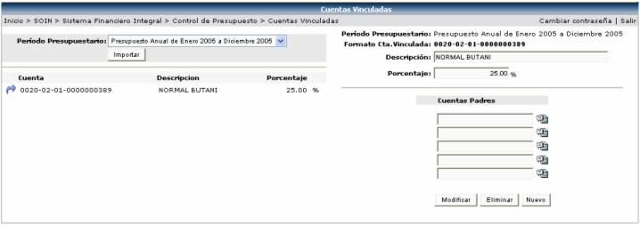
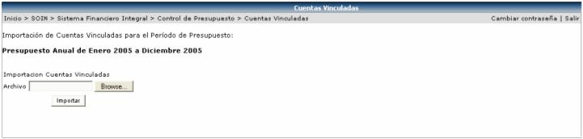

En esta opción del sistema de presupuesto, es donde se definen las cuentas que van a depender de otras cuentas, o sea a estas cuentas no se les podrá ingresar manualmente un monto de presupuesto, sino que el sistema calculará automáticamente el monto, dependiendo del porcentaje que se le asigne a la misma, de la suma de las cuentas padres.
Primero que todo se debe de seleccionar el periodo presupuestario donde se crearan las cuentas vinculadas (en la siguiente figura el periodo se encuentra encerrado en un círculo), luego se selecciona la cuenta y se digita el porcentaje a aplicar:
Una vez creada la cuenta se le deben de ligar las cuentas padres de las que depende. El saldo de una cuenta vinculada, puede estar compuesto por varias cuentas padres, de la siguiente manera:
Se suma el monto disponible de las cuentas padres y al total se le calcula el porcentaje digitado anteriormente (esta operación la realiza el sistema automáticamente)

También existe la posibilidad de importar
cuentas vinculadas masivamente. Para ello se selecciona el periodo presupuestario
y se presiona el botón  de
la pantalla anterior para que se muestre la siguiente pantalla:
de
la pantalla anterior para que se muestre la siguiente pantalla:

En esta pantalla se presiona el botón
 para buscar el archivo a importar y una vez seleccionado
el archivo se presiona el botón
para buscar el archivo a importar y una vez seleccionado
el archivo se presiona el botón  .
.
El formato con la información que debe de tener el archivo es el siguiente:
- Año inicial del periodo del presupuesto (YYYY).
- Mes inicial del periodo del presupuesto (MM).
- Cuenta Vinculada.
- Descripción de la cuenta vinculada.
- Porcentaje del total de padres.
- Cuenta padre
Cada una de la información va separada por comas y cada registro por un Enter: